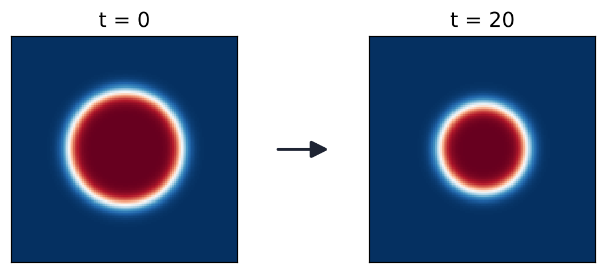
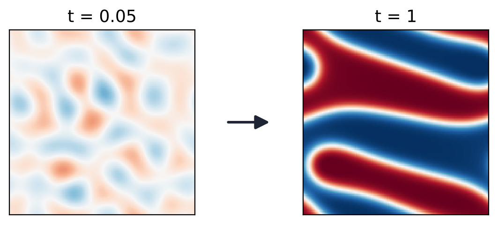

Allen–Cahn と Cahn–Hilliard は何を表すか
Allen–Cahn（AC）：相が入れ替わる
相の量は保存しない．界面は曲率で動き，丸い領域は縮んで消える

計算例：縮む円（2 次元 AC）
- 結晶粒の成長（焼きなましで小さな粒が消え，大きな粒が育つ）
- 合金の規則・不規則変態，磁区の動き
- 凝固（液体 → 固体，熱の式と連成）
Cahn–Hilliard（CH）：成分が分かれて集まる
各成分の総量を保存する．物質が拡散で移動し，組織が粗くなる

計算例：スピノーダル分解（2 次元 CH）
- 二元合金の相分離（急冷後のスピノーダル分解）
- はんだ組織の粗大化（Sn–Ag，Sn–Pb など）
- 高分子ブレンド，リチウムイオン電池の電極（LiFePO4）
研究とのつながり：TSV・電子実装のはんだ接合では，組織の粗大化（CH）が熱疲労の寿命を左右する．熱応力（固体力学）と連成させれば「応力下で組織がどう変わるか」という問題になる